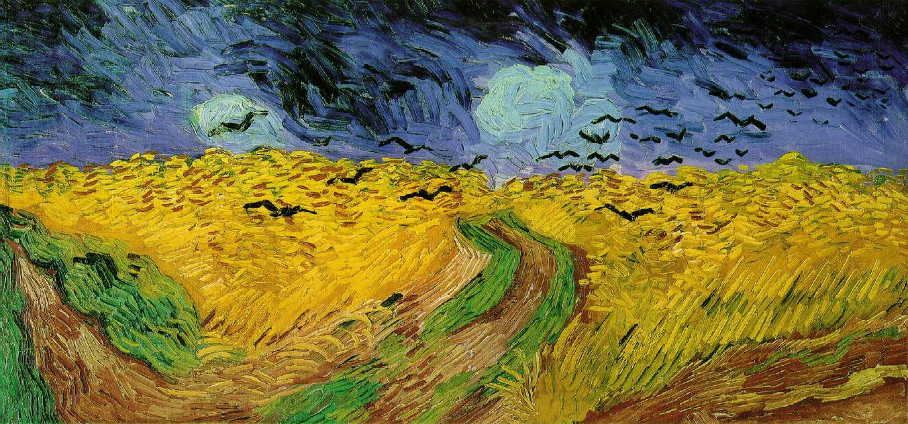

La première image montre un environnement champêtre, capturé depuis un bosquet qui longe la piste cyclable. Les voix humaines que l’on entend indiquent la présence du chemin juste en contrebas. Les deux premières vues feront exception au reste, car après, la caméra ne quittera plus le chemin. Ce parti pris a été fait pour accentuer le principe du film : partir d’un point rural, remonter une longue voie verte, jusqu’à atteindre l’hypercentre de Bristol. Cette randonnée cinématographique, filmée durant 13 jours, propose un aperçu des ambiances et paysages, afin de raconter la progression dans un milieu de plus en plus urbain. L’objectif est d’interroger les éléments intrinsèques à la ville, de décrire la subdivision spatiale et de recenser les frontières.
On quitte la forêt déserte pour accéder au chemin. Rapidement, on comprend que l’endroit est entretenu et fréquenté, en atteste la présence de bancs, de poubelles, et la densité de passage. Le bucolisme du décor s’atténue quelque peu à l’approche l’ancienne station Avon riverside, visiblement toujours en bon état. On voit même un affichage prévenant du danger des trains, la liaison entre Bristol et Bath n’utilise pourtant plus ce chemin depuis la fin des années 60.
Il y a en fait un service touristique opérant de temps en temps sur la voie ferrée en utilisant d’anciens trains à vapeur, sur une section restreinte.
Séquence 2 - Nature à portée de main
Filmée durant un après-midi ensoleillé, la deuxième séquence correspond à la traversée de la rivière Avon, à l’amont de Bristol. L’aire de pique-nique et le ponton se trouvant en contrebas, accessible depuis bristol et bath par le chemin, font du Railway Path un lieu de forte affluence. On entend musiques, conversations, plongeons. Le tracé rectiligne, les nombreux ponts, le relatif déboisement et la topographie plate de la vallée de l’Avon accentuent la dimension paysagère du lieu.
La ville n’est pas présente visuellement mais la forte densité et le type d’usage laissent deviner la présence d’un grand pôle de population à proximité. Le partage du chemin entre piétons et trains est également une composante urbaine. Les contraintes de sécurité obligent une stricte division de l’espace et un aménagement clair.
Dans le point précédent, la ville est envisagée comme un monde maitrisé et civilisé à l’inverse du monde sauvage qui serait anarchique. Cette définition est assez intuitive et peut avoir du sens, mais elle est bien insuffisante voire assez inexacte :
- Le monde rural est, bien que non urbain, parfaitement civilisé et maîtrisé
- Certaines zones urbaines ont un fonctionnement informel et anarchique
Filmée durant un après-midi ensoleillé, la deuxième séquence correspond à la traversée de la rivière Avon, à l’amont de Bristol. L’aire de pique-nique et le ponton se trouvant en contrebas, accessible depuis bristol et bath par le chemin, font du Railway Path un lieu de forte affluence. On entend musiques, conversations, plongeons. Le tracé rectiligne, les nombreux ponts, le relatif déboisement et la topographie plate de la vallée de l’Avon accentuent la dimension paysagère du lieu.
Par ailleurs, il est parfois utile de s’intéresser à l’anti-objet d’étude pour avancer, ce qui dans notre cas est assez difficile. Qu’elle est l’inverse de la ville ? Le monde sauvage ou la ruralité ? Les deux semblent eux-mêmes opposés l’un de l’autre, approcher le sujet en poursuivant une opposition binaire est illusoire.
Séquence 3 - Le grand paysage fait place à la ville
Filmée à une heure plus tardive, la séquence suivante montre le même endroit, plus tranquille, plus vide et plus froid. Ici le Railway Path semble servir seulement à sa fonction élémentaire : la mobilité rapide, bien que quelques usagers se promènent. Le profil du chemin est semblable à celui du tronçon précédent : linéaire et perché sur un talus, en surplomb de la vallée plate. Le grand paysage dépeint un cadre rural, mais on approche de la ville. Les premières habitations apparaissent, on commence à apercevoir des codes visuels rappelant la périurbanisation tel des infrastructures sportives. A la toute fin, la rencontre avec la circulation automobile entre en rupture totale avec le milieu expérimenté jusque-là. Dominée par le bruit de la route, l’ambiance bucolique s’estompe. Les vues sont bornées, la perspective du champ visuelle se resserre, le grand paysage fait place à la ville.
Séquence 4 - Cité ferroviaire
La caméra traverse le vaste complexe ferroviaire de Bitton. Ce lieu semble vivre selon sa propre temporalité, de nombreux objets et ferrailles sont laissé vacants, quelques artisans s’occupent de réparations et entretiens, probablement membres de la société touristiques qui exploitent les trains à vapeur. La nature urbaine ou rurale du site est difficile à trancher, le calme et la végétation placide entrant en opposition avec le désordre des objets. En arrière- plan, le relief et les arbres ne laissent entrevoir aucun bâtiment. La ville est visuellement à distance du Railway Path, bien qu’en réalité, le chemin se trouve en cet instant au cœur d’un tissu pavillonnaire.
Séquence 5 - Collapsologie
Dans la continuité du faisceau ferroviaire, on traverse une vaste zone parsemée de wagons cette fois à l’abandon total : la végétation pousse dessus. Cette ambiance visuelle
évoque la collapsologie (étude de l’effondrement) ; en contradiction avec l’environnement sonore : on entend cours de récréation et sirènes. Un paradoxe apparaît, alors qu’on approche du centre urbain, le Railway Path paraît plus désuet et moins entretenu. Deux interprétations sont possibles :
- La ville ne devient pas forcément plus dense (en usages et en population) à mesure que l’on suit une radiale. Le gradient d’urbanité (1) n’est pas progressif.
- La baisse de densité humaine ne signifie pas une baisse d’urbanité. La ville n’est pas complètement aménagée (maitrisée) et certains espaces sont sauvages (naturels).
On constate sur la carte que le chemin n’est pas strictement une radiale, le tracé est parfois tangentiel. Toutefois, chaque mile parcouru nous rapproche du centre-ville.
Plus loin, la ville descend et le chemin s’y intègre. On aperçoit des maisons, qu’un grand nombre d’accès connecte au chemin, qui devient alors un lieu de promenade en plus d’être une infrastructure de mobilité douce.
Séquence 6 - Ville non humaine
On aperçoit dès le début de cette séquence le premier passage piéton auquel le Railway Path est confronté. Cet évènement est marquant car il s’agit du premier obstacle : obligation de s’arrêter, de poser pied-à-terre, et de presser le bouton pour solliciter l’interruption de la circulation automobile. Sinon, la voie verte est la plupart du temps en site propre, isolée de la ville. À l’arrivée à l’ancienne station de Warmley, trois éléments diversifient les modes d’usage de la piste cyclable, et intensifient son intégration urbaine :
- La traversée d’un axe fort de circulation (A420) avec transports en commun coupe le chemin.
- La reconversion de l’ancienne gare en café requalifie l’usage des quais, superpose un comportement statique à l’utilisation surtout dynamique de la piste.
- La scénographie illustre l’histoire ferroviaire du lieu (mannequins, statues de voyageurs), la mise en avant du patrimoine humanise le lieu via la culture.
Ces interprétations supposent une théorie selon laquelle une diversité d’usage intensifie l’urbanité (1).
La séquence se conclut à l’approche de la voie rapide. Dimensionnées en fonction de l’envergure de la ville, les infrastructures routières sont parties intégrantes de celle-ci. Rencontrer un réseau autoroutier important démontre que l’on se situe dans un environnement urbain. En parallèle, et paradoxalement, à mesure que l’on approche ces
longues étendues de bitume, un phénomène de désertification survient. Les comportements sociaux que l’on pouvait observer précédemment (flâneries, promenades, sport, baignade), et que l’on identifiait comme des marqueurs d’urbanité ont totalement disparu. À l’écran, le temps gris, le vent qui balayent lentement les champs de céréales, le bruit irrégulier de la roue de vélo qui tourne péniblement, ainsi que le son sourd de l’autoroute sont autant d’éléments qui mettent en scène la désuétude, voire qui font l’allégorie de la mort.

Champs de blé aux corbeaux, Vincent Van Gogh
Pourtant, comme énoncé au début du paragraphe, la nature de ce lieu est intrinsèquement urbaine. Le terme désuétude est très mal choisi car l’endroit est en réalité intensément utilisé. La variété de ces usages est appauvrie par la prédominance de la fonction de réseau. (Autoroute, lignes haute tension, piste cyclable)
Séquence 7 - Passerelles d'entrée
Les zones autoroutières ont une portée symbolique forte : celle d’être la porte de la ville. Ce symbole est pluridimensionnel :
On quitte la forêt déserte pour accéder au chemin. Rapidement, on comprend que l’endroit est entretenu et fréquenté, en atteste la présence de bancs, de poubelles, et la densité de passage. Le bucolisme du décor s’atténue quelque peu à l’approche l’ancienne station Avon riverside, visiblement toujours en bon état. On voit même un affichage prévenant du danger des trains, la liaison entre Bristol et Bath n’utilise pourtant plus ce chemin depuis la fin des années 60.
- La dimension spatiale : le tracé de ces voies est périphérique, la route est une frontière physique et matérielle : une enceinte. On ne la traverse qu’en certains points de passage précis : les portes.
- La dimension toponymique (noms des lieux) : Les échangeurs autoroutiers sont souvent dénommés porte de (...). Massivement utilisé en France (porte des lilas, porte de l’Essonne, porte de Lyon), ce procédé est moins fréquent en Grande-Bretagne, mais on trouve tout de même la Bristol Gate à l’entrée Ouest de la ville. C’est un moyen de définir arbitrairement (et artificiellement) les limites de la ville.
- Enfin, la dimension paysagère, très en vue dans la vidéo. La séquence précédente témoignait de la relative non-urbanisation des zones en bordure d’autoroutes. L’absence de construction libère ainsi le champ de vision et offre des cadrages spectaculaires sur la ville, visibles que l’on soit au volant ou piéton sur la passerelle. L’arrivée à Bristol via la motorway M32 en viaduc offre un panorama sur les terraced house (terme local renvoyant aux traditionnelles maisons en bande)
On aperçoit au début de la séquence les fameuses terraced house. Le pont au-dessus de la voie rapide scénarise alors une porte d’entrée dans la ville : le plan est centré, l’horizon dévoile la ville, on voit un citadin s’engouffrer à pleine vitesse dans celle-ci, doté d’un moyen de transport high-tech, récent de la dernière tendance. L’autoroute apparaît dans le champ visuel seulement lors de la traversée du pont, elle n’était présente que dans l’environnement sonore auparavant. Au-delà, on retourne dans un espace plutôt désert, coincé entre deux voies rapides. Ici, la fonction du Railway Path est principalement d’être une véloroute, aux caractéristiques finalement analogues aux autoroutes environnantes : pas de comportements statiques, et un seul usage dynamique. Certaines traces indiquent néanmoins que des usagers se sont plus attardé et ont déambulé dans le lieu. Les stickers ont été collé par quelqu’un se trouvant dans un esprit d’observation, rentrant en interaction avec le Railway Path en se l’appropriant. Cette action communique un message qui stimulera possiblement le regard de l’usager suivant. À mesure que l’on avance, le chemin livre des points de vue de plus en plus rapprochés sur les zones résidentielles. Mais, même lorsque l’on est collé aux maisons, on reste à distance de la ville car on est situé en dehors du réseau viaire. Les constructions font habituellement face à la rue, ainsi, en se déplaçant sur une ancienne voie ferrée, ce n’est plus la façade que l’on voit. Le Railway Path bénéficie, en ce sens, d’un potentiel paysager hors du commun.
Séquence 8 - Course touristique
En certains points, la trame viaire des lotissements se connecte au Railway Path, ce qui diversifie la nature des déplacements. Aux longs itinéraires s’additionnent de simples trajets de voisinage, ce qui occasionne quelques conflits d’usage, piétons et cyclistes partageant une seule et même voie. L’ancienne station de Mangotsfield est aujourd’hui un lieu d’interaction : à la croisée de deux chemins, de nombreux voyageurs y font halte. L’environnement est calme, ce qui permet d’entendre le chant des oiseaux, on peut se hisser sur l’ancien quai, adossé au mur désaffecté, pour se mettre à distance des vélos en circulation. On y entend discussions et rires. Une forte densité d’échange sociaux que l’on peut interpréter comme un marqueur d’urbanité, à l’image des lieux de plaisance et de baignades rencontrés au début de l’itinéraire. L’endroit est animé par la réappropriation du patrimoine. Les grands espaces verts, et les longs murs opaques qui le bordent isolent le chemin. Cette mise à distance de la ville fait apparaître le Railway Path comme un système indépendant ou un système dans le système. Sur cette section, de nombreux aménagements laissent deviner que le l’endroit a été pensé non seulement comme un outil de mobilité mais également comme une infrastructure touristique à part entière.
Séquence 9 - Grotte et corridor écologique
Pour des raisons techniques, une voie ferrée doit s’étirer le long d’un tracé plat. Cette caractéristique dissocie fortement ces ouvrages du reste de la ville, lorsque celle-ci s’étend sur des reliefs accidentés. Des tronçons sur talus ou en tranchée ont été rencontré précédemment dans le film, et dans la séquence qui vient, la topographie joue à nouveau un rôle important. Les maisons surplombent la fosse du Railway Path, la pente qui les sépare est plantée d’arbres, telle une forêt linéaire. La trame végétale est pratiquement ininterrompue de la campagne à la ville, permettant probablement le passage d’espèce vivante d’un milieu vaste à un milieu contraint, et ainsi l’existence de divers corridors écologiques (2). Questionner la biodiversité dans un raisonnement sur la définition de l’urbanité permet de toucher une multitude de points sensibles concernant le fonctionnement de la ville. De l’imperméabilisation des sols à la pollinisation des fleurs, de la régulation de l’ilot de chaleur au contact entre l’humain et la faune et les enjeux sanitaires liés, une multitude de sujets soulignent les enjeux urbains de la nature. Dans les années 1960, un outil a été inventé pour lutter contre les étalements urbains de Bristol et de Bath : the Avon green belt. Cette politique conceptualise le tissu bâti et la nature comme antagonistes. Aujourd’hui, la green belt est toujours précieuse, l’étalement urbain menace toujours les zones sauvages et rurales. Toutefois, une nouvelle vision a émergé. Parmi les outils de représentation d’aménagements classiques, parmi les cartes du tissu urbain et les plans de réseaux viaires sont apparus les schémas de trame verte et bleue (TVB), de sorte que les espaces construits et les espaces verts soient désormais perçus comme imbriqués.
Le Railway Path est, en ce sens, un lieu qui permet à la ville d’apparaître sous un jour contemporain. L’image et le son permettent une observation sommaire de la présence de la biodiversité sur ce tracé, on aimerait étudier plus en profondeur les bienfaits et problématiques occasionnés par ce supposé corridor écologique.
Plus loin, on atteint le point haut du relief environnant, le chemin doit alors se poursuivre en tunnel. Il s’agit également d’un point culminant du parcours en termes sensoriels : la perception du son change, la température baisse, le champ de vision se borne et s’obscurcit. Couteux et faisant appel à des moyens complexes, le tunnel est un aménagement qui semble très urbain, ou qui du moins est la marque d’une société humaine très développé. Pourtant, ce lieu fait simultanément voyager celui qui le traverse dans un monde primitif. Du bruit des gouttes d’eau, aux peintures (rupestres) que l’on aperçoit, l’univers sensoriel présent forme une allégorie de la caverne.
De retour à l’air libre, la ville se dévoile par la superposition des usages : cyclistes en transit côtoient riverains occupés à tranquillement consommer boissons rafraichissantes. Une grande cheminée se dresse dans le paysage, signe précurseur de la traversée d’une zone industrielle.
Séquence 10 - Monde froid et vaisseau spatial
La densité de passage augmente, à mesure que l’on approche du centre-ville. De plus en plus, on sent que les personnes rencontrées sont des utilisateurs fréquents du chemin, les trajets sont plus courts et peu de cyclistes semblent s’être aventurés sur de longs itinéraires. On distingue tout de même de volumineux sacs de randonnées, probablement proches d’être arrivés à destination. Ici, le Railway Path est une infrastructure de mobilité quotidienne, les accès aux rues adjacentes se sont d’ailleurs multipliés, mais le chemin fait toujours partie du réseau cyclable national (national cycle network). Ainsi, grands voyageurs côtoient simples passants, la multitude et la variété de ces parcours habillent le lieu d’un visage cosmopolite et urbain. Les paysages rencontrés sont pourtant fort inhospitaliers, arrière-cours d’usine, aires
de manutention, et stockages de matériaux dont la couleur ocre nous transporte loin sur une célèbre planète voisine de la Terre. Alors qu’elle atteint le contact de la ville, la piste cyclable semble subitement ignorée par celle-ci, subitement anonymisée alors que juste précédemment son patrimoine était scénographié. Elle semble avoir été reléguée au rang d’espace servant. L’imaginaire de l’espace est à nouveau présent lorsque l’on rencontre un court tunnel dont la forme ovoïde évoque un vaisseau, dont bon nombre d’humains se sont approprié le parement de carrelage brillant pour exprimer leur créativité.
Séquence 11 - Réification de la société humaine
Dans la séquence qui suit, la porosité entre le Railway Path et la ville s’accroît. Les connexions aux rues sont plus nombreuses et les barrières qui délimitent et protègent le chemin sont davantage jardinées. Alors que l’on traverse un décor de zone commerciale typique des entrées de ville, on sent que la voie ferrée a changé de statut. Né de la volonté de connecter un ensemble de points ciblés, les chemins de fer sont destinés à n’impacter que les localités environnant les gares. Le tracé est toujours pragmatique, il suit une logique économique pour permettre le trajet le plus court, mais garantissant en tout point un rayon de giration suffisant pour assurer la bonne circulation des trains. Au-delà des zones proches des stations, le chemin de fer s’intègre au mieux de manière anecdotique, au pire s’impose comme une nuisance. L’observation de la topographie souligne ce constat de déconnexion entre l’aménagement micro-urbain du quartier, et la planification macro-urbaine du territoire.
En effet, le Railway Path est sur une majeure partie du tracé un élément accidentel dans le champ urbain. Ici, ce statut change exceptionnellement, la piste cyclable est au niveau de la route, les deux ne sont séparés que de quelques mètres par un massif planté, couronné d’un alignement d’arbre. Le mobilier et les accès sont nombreux, le lieu prend les allures d’une gare des mobilités douces, véritable porte contemporaine de la ville. Il ne s’agit plus d’un espace fortuit mais d’un pôle structurant et attractif.
L’omniprésence de l’actualité caractérise aussi l’urbanité : les graffitis à l’éloge des mouvements Black Lives Matters ou autres réifient le dynamisme et l’engagement des habitants de Bristol, sur les surfaces de murs.
Un peu loin, le Railway Path se déconnecte de son environnement et poursuit son propre chemin à travers le tissu bâti, mais les points de contact avec les rues de la ville sont désormais plus fréquents. Le paysage se dégage parfois et certaines vues permettent, pour la première fois, d’apercevoir le centre-ville. Les densités et diversités d’usage, grandissantes, atteignent leur paroxysme lorsque l’on rencontre the Cycle Path Gallery. Cette initiative associative d’incitation à l’appropriation libre de la ville anime un pan de mur anodin pour y refléter l’art local. Une autre forme de réification de la société humaine sur l’habitat. Le principe est gai, mais les conditions d’exposition rendent impossible la bonne conservation des toiles, et le mur prend un aspect quelque peu abandonné.
Séquence 12 - Pression foncière et ville fresque
Toutes surfaces disponibles semblent être investies. À ce point du film, on rencontre pour la première fois un élément très important, l’un plus indiscutable facteur d’urbanité : la pression foncière. Une intense activité est transcrite à l’écran par de nombreux chantiers environnements, tandis que les fresques et graffitis omniprésents et l’affichage sauvage témoignent de la valeur des surfaces de murs vierges. La couche urbaine que l’on traverse est hybride : périphérique certes, mais dynamique. Le patrimoine industriel est rénové, mais sa valorisation n’est pas spécialement scénographiée, donc la ville n’est pas muséifiée, au contraire de nombreux centres-villes européens. L’urbanisation reste ainsi libre, non contrôlées, ce qui est une caractéristique de la banlieue, territoire d’expérimentations et d’innovations. Les codes du faubourg sont bien visibles : terraced houses (maisons en bande) qui s’étendent à perte de vue, hangars, jardins ouvriers, vastes infrastructures sportives, et voies ferrées exploitées. Encore très peu de logements collectifs. Le Railway Path est une saignée verte qui coupe un réseau viaire labyrinthique, ce qui rend le passage attractif car il s’agit de l’unique tracé direct en direction de l’hypercentre. Le quartier est fortement zoné (3) mais les lotissements ne sont pas cité-dortoir pour autant, il existe en effet une riche mixité programmatique.
À cette apparente effervescence s’ajoute une augmentation de la densité d’usage. Il y a désormais autant voire plus de piétons que de cyclistes. La distance moyenne de parcours de l’utilisateur type est en chute libre et les accès toujours plus nombreux.
Séquence 13 - Couronne logistique et centre-ville
A mesure qu’il approche l’hypercentre, le Railway Path rencontre de nombreux obstacles, routes à fort trafic et voies ferrés se présentent sur le chemin, à l’image des voies rapides qu’il fallait franchir pour entrer dans l’agglomération. Ces infrastructures font état d’un second système de contournement, cette fois au contact du centre-ville. Cette observation permet de déduire que la ville, constituée d’un noyau puis d’une périphérie, est discontinue. Les limites urbaines sont nettes : on traverse des routes d’abord à l’interface entre le noyau et la périphérie, puis à l’interface entre la périphérie et le monde rural. Ces ruptures sont franchies par-dessous, sous les ponts, de manière peu spectaculaire. Situé en contrebas, le chemin est comme ignoré par la ville qui lui offre un décor d’arrière-cour d’usine et d’espaces logistiques. Le centre est en effet entouré d’une couche industrielle, la densité de population va paradoxalement décroître à mesure que l’on avance, et que l’espace perd sa vocation résidentielle. La présence humaine est tout même signalée par les quelques références à l’actualité que l’on peut apercevoir : stickers politiques dans le contexte du mouvement kill the bill et drapeau anglais à l’occasion de l’euro de football. Cela participe à la fabrication de la ville et rompt avec l’atmosphère désertique du lieu. Juste après que le premier immeuble de logement collectif soit apparu, le chemin se dilate enfin pour former un large parc, à l’image d’un fleuve qui trouverait son exutoire en se métamorphosant en estuaire. La piste cyclable continu au-delà, mais est désormais inscrite sur le réseau viaire : c’est la fin du site propre.
Le rapport à la ville change soudainement, car un rééquilibrage spatial intervient. Le piéton ne bénéficie plus l’intégralité de l’espace et voit une grande partie de son bien lui être retiré au profit de l’automobiliste.
Un dernier carrefour à très fort trafic oblige une traversée souterraine puis on atteint le castle park. Ce parc est une barrière protectrice, un espace tampon qui permet une transition douce entre la zone de service bruyante préalable à la zone de loisirs et de consommation que constitue l’hypercentre. L’itinéraire cyclable est toujours présent, mais le national cycle network est maintenant noyé dans le réseau local : on ne devine plus, en ce point que l’on se trouve sur le chemin de Bath. À l’extrémité d’une vaste esplanade piétonne, la caméra atteint des gradins orientés vers l’eau, dont l’étendue interrompt visuellement le chemin et conclut le film.
(1) Urbanité :
L'urbanité renvoie, dans le sens courant, à une qualité d'individus se comportant de manière polie avec autrui et dans une deuxième acception, propre à la géographie, au caractère urbain d'un espace.
Dans cette seconde acception, l'urbanité peut être définie comme procédant du « couplage de la densité et de la diversité des objets de société dans l'espace » (Lussault, 2003)
(2) Corridor écologique :
L'urbanité renvoie, dans le sens courant, à une qualité d'individus se comportant de manière polie avec autrui et dans une deuxième acception, propre à la géographie, au caractère urbain d'un espace.
Dans cette seconde acception, l'urbanité peut être définie comme procédant du « couplage de la densité et de la diversité des objets de société dans l'espace » (Lussault, 2003)
(3) Zoning :
Francisation de l'anglo-amér. zoning désignant une conception d'urbanisme élaborée à Boston en 1912 4th Nat. Conference City Planning. Réglementation organisant la répartition d'un territoire en zones et fixant pour chacune d'elles le genre et les conditions de l'utilisation du sol.